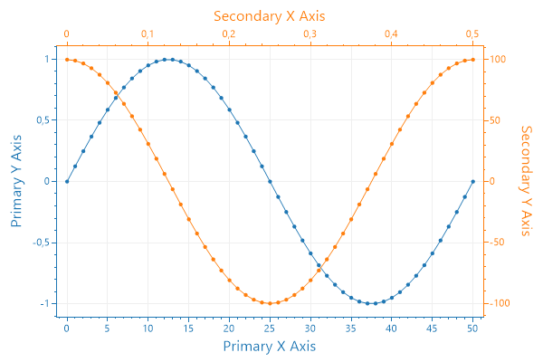
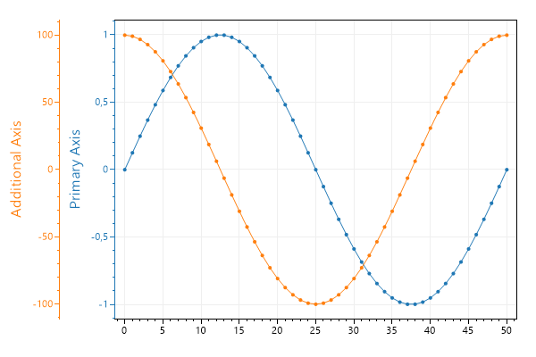
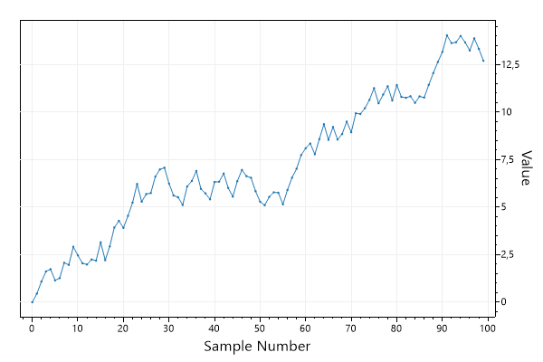
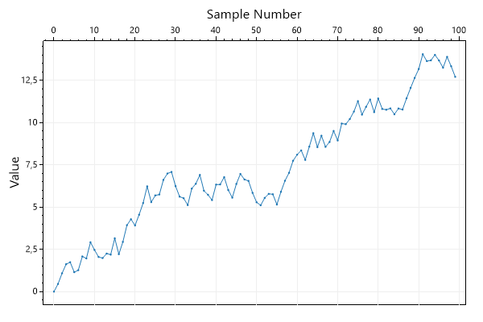
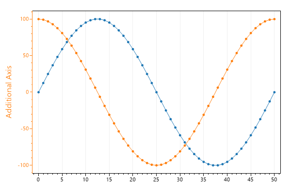
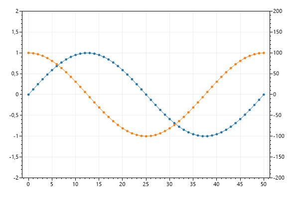

This page contains recipes for the Multi-Axis category.
Visit the Cookbook Home Page to view all cookbook recipes.
Visit the Cookbook Home Page to view all cookbook recipes.
Primary Axes
Plots always have 4 fundamental axes available to work with. Primary axes (XAxis and YAxis) are axis index 0. Secondary axes (XAxis2 and YAxis2) are axis index 1.By default primary axes are totally visible, and secondary axes have ticks hidden and no label. Sometimes the top axis (XAxis2) is given a label to simulate a plot title.
var plt = new ScottPlot.Plot(600, 400);
// plot one set of data using the primary Y axis
var sigSmall = plt.AddSignal(DataGen.Sin(51, mult: 1), sampleRate: 1);
sigSmall.YAxisIndex = 0;
sigSmall.XAxisIndex = 0;
plt.XAxis.Label("Primary X Axis");
plt.YAxis.Label("Primary Y Axis");
plt.XAxis.Color(sigSmall.Color);
plt.YAxis.Color(sigSmall.Color);
// plot another set of data using the secondary axes
var sigBig = plt.AddSignal(DataGen.Cos(51, mult: 100), sampleRate: 100);
sigBig.YAxisIndex = 1;
sigBig.XAxisIndex = 1;
plt.YAxis2.Ticks(true); // ticks weren't visible by default
plt.XAxis2.Ticks(true); // ticks weren't visible by default
plt.YAxis2.Color(sigBig.Color);
plt.XAxis2.Color(sigBig.Color);
plt.YAxis2.Label("Secondary Y Axis");
plt.XAxis2.Label("Secondary X Axis");
plt.SaveFig("multiAxis_primary.png");

Additional Y Axis
Additional axes can be added on any edge. Additional axes stack away from the plot area.
var plt = new ScottPlot.Plot(600, 400);
// plot one set of data using the primary Y axis
var sigSmall = plt.AddSignal(DataGen.Sin(51, mult: 1));
sigSmall.YAxisIndex = 0;
plt.YAxis.Label("Primary Axis");
plt.YAxis.Color(sigSmall.Color);
// plot another set of data using an additional axis
var sigBig = plt.AddSignal(DataGen.Cos(51, mult: 100));
var yAxis3 = plt.AddAxis(Renderable.Edge.Left);
sigBig.YAxisIndex = yAxis3.AxisIndex;
yAxis3.Label("Additional Axis");
yAxis3.Color(sigBig.Color);
plt.SaveFig("multiAxis_additional.png");

Right Y Axis
This example demonstrates how to display a Y axis on the right side of the figure. The vertical axis to the right of the figure is index 1, so plots must be updated to indicate they are to use a nonstandard axis index.
var plt = new ScottPlot.Plot(600, 400);
double[] values = DataGen.RandomWalk(100);
var sig = plt.AddSignal(values);
sig.YAxisIndex = 1;
plt.YAxis.Ticks(false);
plt.YAxis.Grid(false);
plt.YAxis2.Ticks(true);
plt.YAxis2.Grid(true);
plt.YAxis2.Label("Value");
plt.XAxis.Label("Sample Number");
plt.SaveFig("multiAxis_right.png");

Top X Axis
This example demonstrates how to display an X axis above the figure. The horizontal axis above the figure is index 1, so plots must be updated to indicate they are to use a nonstandard axis index.
var plt = new ScottPlot.Plot(600, 400);
double[] values = DataGen.RandomWalk(100);
var sig = plt.AddSignal(values);
sig.XAxisIndex = 1;
plt.XAxis.Ticks(false);
plt.XAxis.Grid(false);
plt.XAxis2.Ticks(true);
plt.XAxis2.Grid(true);
plt.XAxis2.Label("Sample Number");
plt.YAxis.Label("Value");
plt.SaveFig("multiAxis_top.png");

Axis Visibility
Visibility of axes can be toggled. In this example an additional Y axis is added but the primary Y axis is hidden. The result is a plot that appears to only have one Y axis.
var plt = new ScottPlot.Plot(600, 400);
// plot one set of data using the primary Y axis
var sigSmall = plt.AddSignal(DataGen.Sin(51, mult: 1));
sigSmall.YAxisIndex = 0;
plt.YAxis.Label("Primary Axis");
plt.YAxis.Color(sigSmall.Color);
// plot another set of data using an additional axis
var sigBig = plt.AddSignal(DataGen.Cos(51, mult: 100));
var yAxis3 = plt.AddAxis(Renderable.Edge.Left, axisIndex: 2);
sigBig.YAxisIndex = 2;
yAxis3.Label("Additional Axis");
yAxis3.Color(sigBig.Color);
// hide the primary Y axis
plt.YAxis.IsVisible = false;
plt.SaveFig("multiAxis_invisible.png");

Setting Multi Axis Limits
Axis limits can be set for each axis by indicating which axis index you are wish to modify when setting axis limits.
var plt = new ScottPlot.Plot(600, 400);
// signal one on the primary Y axis
var sig1 = plt.AddSignal(DataGen.Sin(51, mult: 1));
sig1.YAxisIndex = 0;
// signal two on the secondary Y axis
var sig2 = plt.AddSignal(DataGen.Cos(51, mult: 100));
sig2.YAxisIndex = 1;
plt.YAxis2.Ticks(true);
// set axis limits for each axis individually
plt.SetAxisLimits(yMin: -2, yMax: 2, yAxisIndex: 0);
plt.SetAxisLimits(yMin: -200, yMax: 200, yAxisIndex: 1);
plt.SaveFig("multiAxis_limits.png");
